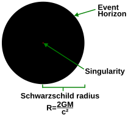
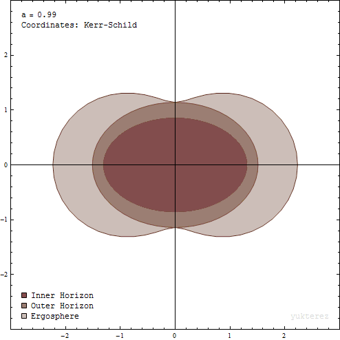

The simplest static black holes have mass but neither electric charge nor angular momentum. These black holes are often referred to as Schwarzschild black holes after Karl Schwarzschild who discovered this solution in 1916. According to Birkhoff's theorem, it is the only vacuum solution that is spherically symmetric. This means that there is no observable difference between the gravitational field of such a black hole and that of any other spherical object of the same mass. The popular notion of a black hole "sucking in everything" in its surroundings is therefore only correct near a black hole's horizon; far away, the external gravitational field is identical to that of any other body of the same mass.
The defining feature of a black hole is the appearance of an event horizon—a boundary in spacetime through which matter and light can only pass inward towards the mass of the black hole. Nothing, not even light, can escape from inside the event horizon. The event horizon is referred to as such because if an event occurs within the boundary, information from that event cannot reach an outside observer, making it impossible to determine if such an event occurred.
As predicted by general relativity, the presence of a mass deforms spacetime in such a way that the paths taken by particles bend towards the mass. At the event horizon of a black hole, this deformation becomes so strong that there are no paths that lead away from the black hole.
To a distant observer, clocks near a black hole would appear to tick more slowly than those further away from the black hole. Due to this effect, known as gravitational time dilation, an object falling into a black hole appears to slow as it approaches the event horizon, taking an infinite time to reach it. At the same time, all processes on this object slow down, from the view point of a fixed outside observer, causing any light emitted by the object to appear redder and dimmer, an effect known as gravitational redshift. Eventually, the falling object fades away until it can no longer be seen. Typically this process happens very rapidly with an object disappearing from view within less than a second.
The shape of the event horizon of a black hole is always approximately spherical. For non-rotating (static) black holes the geometry of the event horizon is precisely spherical, while for rotating black holes the event horizon is oblate.
At the center of a black hole, as described by general relativity, may lie a gravitational singularity, a region where the spacetime curvature becomes infinite. For a non-rotating black hole, this region takes the shape of a single point and for a rotating black hole, it is smeared out to form a ring singularity that lies in the plane of rotation. In both cases, the singular region has zero volume. It can also be shown that the singular region contains all the mass of the black hole solution. The singular region can thus be thought of as having infinite density.
Observers falling into a Schwarzschild black hole (i.e., non-rotating and not charged) cannot avoid being carried into the singularity, once they cross the event horizon. They can prolong the experience by accelerating away to slow their descent, but only up to a limit. When they reach the singularity, they are crushed to infinite density and their mass is added to the total of the black hole. Before that happens, they will have been torn apart by the growing tidal forces in a process sometimes referred to as spaghettification or the "noodle effect". In the case of a charged (Reissner–Nordström) or rotating (Kerr) black hole, it is possible to avoid the singularity. Extending these solutions as far as possible reveals the hypothetical possibility of exiting the black hole into a different spacetime with the black hole acting as a wormhole.
The appearance of singularities in general relativity is commonly perceived as signaling the breakdown of the theory. This breakdown, however, is expected; it occurs in a situation where quantum effects should describe these actions, due to the extremely high density and therefore particle interactions. To date, it has not been possible to combine quantum and gravitational effects into a single theory, although there exist attempts to formulate such a theory of quantum gravity. It is generally expected that such a theory will not feature any singularities
The photon sphere is a spherical boundary of zero thickness in which photons that move on tangents to that sphere would be trapped in a circular orbit about the black hole. For non-rotating black holes, the photon sphere has a radius 1.5 times the Schwarzschild radius. Their orbits would be dynamically unstable, hence any small perturbation, such as a particle of infalling matter, would cause an instability that would grow over time, either setting the photon on an outward trajectory causing it to escape the black hole, or on an inward spiral where it would eventually cross the event horizon.
While light can still escape from the photon sphere, any light that crosses the photon sphere on an inbound trajectory will be captured by the black hole. Hence any light that reaches an outside observer from the photon sphere must have been emitted by objects between the photon sphere and the event horizon.
Rotating black holes are surrounded by a region of spacetime in which it is impossible to stand still, called the ergosphere. This is the result of a process known as frame-dragging; general relativity predicts that any rotating mass will tend to slightly "drag" along the spacetime immediately surrounding it. Any object near the rotating mass will tend to start moving in the direction of rotation. For a rotating black hole, this effect is so strong near the event horizon that an object would have to move faster than the speed of light in the opposite direction to just stand still.
The ergosphere of a black hole is a volume whose inner boundary is the black hole's oblate spheroid event horizon and a pumpkin-shaped outer boundary, which coincides with the event horizon at the poles but noticeably wider around the equator. The outer boundary is sometimes called the ergosurface.
Objects and radiation can escape normally from the ergosphere. Through the Penrose process, objects can emerge from the ergosphere with more energy than they entered. This energy is taken from the rotational energy of the black hole causing the latter to slow. A variation of the Penrose process in the presence of strong magnetic fields, the Blandford–Znajek process is considered a likely mechanism for the enormous luminosity and relativistic jets of quasars and other active galactic nuclei.
In Newtonian gravity, test particles can stably orbit at arbitrary distances from a central object. In general relativity, however, there exists an innermost stable circular orbit (often called the ISCO), inside of which, any infinitesimal perturbations to a circular orbit will lead to inspiral into the black hole. The location of the ISCO depends on the spin of the black hole and decreases with increasing black hole spin for particles orbiting in the same direction as the spin.